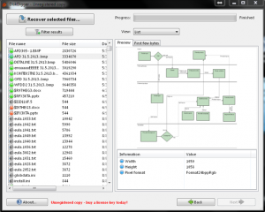
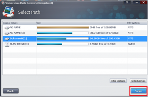
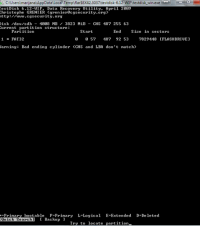

Komercijalno spašavanje podataka
Sadržaj |
SPAŠAVANJE PODATAKA
Gotovo svatko od nas u životu se našao u situaciju da nam je izgorio hard, a na njemu ste imali različite stvari koje su Vam bile od neprocjenjivih vrijednosti. Bilo da su to bile obiteljske slike, neki važni podaci i dokumenti ili sasvim obične poruke ili sastavci koje ste željeli zauvijek sačuvati. U današnje vrijeme ako se dogodi upravo takav problem, da Vam „nestanu“ svi podaci, postoje mnoga rješenja za vraćanje takvih istih podataka.
Mogli bi si na početku postaviti pitanje što je to zapravo spašavanje podataka ili data recovery (eng.). Na to pitanje mogli bismo odgovoriti na više načina. Jedan od načina je da je to: "zahtjevan postupak ili proces pomoču kojih se vračaju podaci kojima u određenom trenutku više ne možemo pristupini na uobičajeni način, ili uobičajenim putem. Dokumenti i podaci spašavaju se sa nekih neispravnih medija a isto tako i sa nekih medija oštećenih fizički. Kod takvih postupaka najvažnije je zaštitita sigurnosti podataka. Kako bi se postiglo upravo takvo spašavanje, koje bi zaštitilo podatke potrebno je iz dana u dan neprestano ulagati u neke nove moderne tehnologije i načine postupanja sa takvim podacima, odnosno nova znanja."
"Spašavanje podataka je posebna vrsta procesa pomoću kojeg se podaci prebacuju sa nekog medija kojem računalo ili neki drugi slični uređaj ne može pristupiti na normalan način. Potrebno je uložiti mnogo truda kako bi se spasili podaci u što većem broju. Količina podataka koja će se spasiti ovisi o više faktora a proces spašavanja podataka različit je i jedinstven za svaki pojedini uređaj ili medij."
U profesionalnim radionicama za spašavanje podataka proces spašavanja vrši se u različitim specijaliziranim laboratorijima u kojima se moraju zadovoljiti visoki standardi, koji se mogu usporediti čak i sa onima u bolnicama, u kirurškim laboratorijima.
Izvor: http://www.fx-files.com/tehnologija/civilna-tehnologija.html
Izvor: http://www.datasector.hr/
--Ivana 19:23, 12. lipnja 2013. (CEST)
POSTUPAK SPAŠAVANJA PODATAKA
Kod spremanaja svojih podataka, datoteka, slika i svi drugih stavki koje ste ikad spremili na računalo jeste li pomislili koliko su zapravo vaši podaci sigurni. Jeste li se pitali postoji li šansa da bez tih svih datoteka ostanete i kako bi se osječali da se to dogodi. Mnogi ne vode baš previše računa o sigurnosti spremljenih podataka a u današnje vrijeme postoje mnogi načini da se bez baš tih podataka veoma lako ostane. Tu može biti riječ o neovlaštenim promjenama sadržaja, njegovom pristupanju, kvaru ali i nekoj trećoj sili koja utječe na podatke. Postoje mnoge mjere zaštite podataka ali sve dok ne ostanemo bez njih ne razmišljamo o tome te sami sebe često dovodimo pred gotov čin, kada nam jedino preostaju pokušaji spašavanja podataka kada su oni već „napola“ izgubljeni.
"Postupak spašavanja podataka je proces koji počinje u onom trenutku kada shvatimo da smo ostali bez određenih podataka. U tim trenucima bilo bi najbolje konzultirati se sa nekom stručnom osobom koja se u potpunosti razumije u spašavanje podataka kako bi unaprijed spriječili moguća daljnja oštećenja na ionako već izgubljenim podacima, bez obzira na to kakva oštećenja bila, te kako bi uvećali šanse da vratimo podatke sa oštećenih medija. Spašavanje podataka možemo prepustiti stručnjacima u specijaliziranim uvjetima, ili se možemo prepustiti samostalnom pokušavanju spašavanja podataka pomoću raznih procesa koje ćemo navesti u daljnjem tekstu našeg rada."
Spašavanje podataka – Hard disk
Hard disk u današnje vrijeme predstavlja zasigurno najrasprostranjeniji medij na kojeg se spremaju podaci te je on uobičajeni dio svakog računala. Koriste se u računalima kako bi se u njega smjestili programi koje korisnik želi upotrebljavati tijekom korištenja računala, a isto tako svakodnevno se koristi za čuvanje raznih dokumenata, slika i podataka nastalih korištenjem prije spomenutih programa. Uz te dvije namjene računalo koristi HD kao privremenu memoriju, kada mu za korištenje ponestane RAM memorije. "Glavni elementi hard diska (fizički sastav) su: kućište, osovina, ploče, glave za pisanje i čitanje, kontroler te keš memorija."
"On postoji već više od 60 godina, tehnologije korištenja magnetskog zapisa na hard disk gotovo svakodnevno se unaprijeđuju i danas postoje diskovi velikih kapaciteta, i to većih od 4000 GB. Hard disk je veoma precizan i osjetljiv elektro-mehanički uređaj, naravno da se može pokvariti. Kada dođe do toga, ne mora značiti da je odmah sve izgubljeno. Postoje načini pomoču kojih se velika večina podataka ipak može spasiti. Jedan od osnovnih, mogli bismo reči „pravila“, kako bi se uspješno spasili podaci je da se hard disk nakon kvarenja, nezgode, koristi što manje i da se ne uključuje. Jer samo jedan krivi postupak ili korak može trajno oštetiti disk i onemogučiti vračanje vaših podataka."
"Postupci spašavanja podataka koji se nalaze na hard disku započinju kloniranjem oštećenog diska. Taj proces „kloniranja“ predstavlja kopiranje svog sadržaja koji se nalazi na tvrdom disku, dio po dio, na neki drugi potpuno ispravni hard disk. Ako na disku postoji fizičko oštećenje kao naprimjer neispravni motor, glave ili oštećenje ploča najprije je potrebno osposobiti hard disk za njegov rad kako bi kopiranje (kloniranje) uopče bilo moguće. Nakon što se završi kopiranje, analizira se klonirani disk i pristupa se spašavanju izgubljenih podataka sa tog kloniranog diska. Podaci koje spasimo tada se snimaju na novi hard disk koji se najčešće naziva data disk.
Za probleme sa hard diskom, veoma je važno da se ne pokušava bilo što, jer bi se tako moglo dodatno narušiti njegovo ionako već narušeno funkcioniranje. Svaki ozbiljni kvar diska nestručni pokušaji korisnika za popravkom mogli bi dovesti do dodatnih umanjenih šansi za spašavanje izgubljenih podataka. Upravo zbog toga, kako smo već nekoliko puta naveli veoma je važno posavjetovati se sa stručnom osobom prije bilo kakve „operacije“ sa hard diskom. No, u nekim trenucima je potpuno nemoguće spasiti bilo kakve podatke sa hard diska, a to je naprimjer kada su oštećene magnetne ploče. Tada ne postoji nikakva tehnologija koja bi omogućila spašavanje tih podataka te to znači trajno gubljenje podataka."
Spašavanje podataka – Flash USB
"USB stick, memorijske kartice te SSD (solid state drive) nastali su u želji da se stvori neki mali, jako izdržljivi uređaj koji će biti otporan na udarce, oštećenja te koji će biti lako prenosiv u svakoj situaciji za čuvanje određenih podataka. Danas nije ništa neobično i posebno imati USB memoriju, nego je to gotovo uobičajeno i neophodno. USB memorije s vremenom su postale nezaobilazni dodatak svakog korisnika računala. USB stikovi koriste se svakodnevno, jako su praktični za prijenos datoteka i podataka, mali su, jeftini te univerzalni. USB memorije veoma su malih dimenzija, no na njih se mogu pohraniti jako velike količine podataka. Danas se ne koriste samo za arhiviranje datoteka, nego i za pohranu različitih video zapisa i datoteka veličine više od 1GB. USB flash stickovi s vremenom su postali nezaobilazni u svakodnevnoj upotrebi i jako teško da ćete u mnoštvu mladih pronaći nekog tko upravo USB ne nosi u džepovima ili na privjescima. USB memorija olakšava život te se na njega mogu pohraniti ogromne količine podataka. No, problemi nastaju kada se oni pokvare... USB memorije veoma brzo nakon kreiranja pronašli su svoje mjesto u primjeni u gotovo svim prenosivim uređajima."
"Svaki USB stick sastoji se od kontrolera i čipova, sa kojih se spašavaju podaci, naravno uz pomoć posebnih sustava i opreme. Zahvaljujući razvoju sve bržih prijenosa podataka, veličina USB memorija sve više i više raste.
Naime, sve ove korisne značajke i prednosti nisu došle bez mane. Postoji velika osjetljivost na električna pražnjenja, kao i problem priključivanja i napajanja koje dovode do veoma čestih otkazivanja. Uz te probleme možemo dodati da je i ograničen broj upisa u svaku memorijsku lokaciju, a zbog toga je algoritam upisa komplicirano samo za sebe. Implementirani algoritmi na neki način „štede“ memorijske lokacije i omogučuju njihovo trošenje ravnomjerno. Zajedničko za te uređaje je da su sastavljeni od kontrolera i memorije. U većini slučajeva otkazuje upravo kontroler. Kako bi se obavilo spašavanje podataka sa ovih uređaja, pomoću posebnih alata uspijevaju se isčitati podaci (sadržaj) memorijskih čipova i uz pomoć različitih operacija omogućava rad kontrolera. Spašavanje podataka sa takvih uređaja mogli bismo
reći da je najveći problem u spašavanju podataka. Razlog tome je veoma je velik broj proizvođača takvih memorija, nepostojanje standarda i kratko vrijeme eksploatacije."
Izvor:http://www.infolab.hr/spasavanje-podataka/spasavanje-podataka-sa-telefona-smartphone/
Izvor:http://itc.wikidot.com/hard-diskovi
Izvor:http://www.infinius.hr/blog/povijest-usb-flash-memorija/
--Ivana 19:23, 12. lipnja 2013. (CEST)
DATOTEČNI SUSTAV; NTFS, FAT32
Datotečni sustav
"Podaci na diskovima organizirani su u datoteke. Datoteke su skupovi povezanih informacija i oni čine jednu cjelinu. Datotečni sustav tip je pohranjivanja i organiziranja računalnih datoteka na medij za pohranu podataka. Danas su funkcije datotečnih sustava dio jezgre operacijskih sustava. Prilikom instalacije operacijskog sustava najčešće se može odrediti koji ćemo datotečni sustav rabiti kao osnovni na nekom računalu, no na više vanjskih medija dostupnih nekome računalu moguće je rabiti više datotečnih sustava. Datotečni sustav kreiran je da definira smještanje podataka na disk i načine kako doći do njih pomoću datotečne tablice."
Upravljanje datotečnim sustavom
"Kao što smo već naveli datotečni sustav je dio Operativnog sustava koji je namijenjen upravljanju (rukovanju) datotekama. On omogućuje pohranjivanje velikih količina informacija, čuvanja podataka u slučajevima uništavanja, pristupanje podatku ili podacima za više procesa u istom trenutku. Na datotekama se mogu obavljati različite operacije, a neke od njih su naprimjer stvaranje, otvaranje, zatvaranje, čitanje, pisanje, dodavanje, pretraživanje, dodavanje i postavljanje atributa, preimenovanje te za nas u našem radu najvažnije brisanje i očuvanje datoteka. Svaki datotečni sustav „ima“ direktorij, jedan ili više. Direktorij je određena datoteka koja je najmijenjena za pohranjivanje podataka o logičkoj strukturi organiziranja podataka na nekoj vanjskoj memoriji. Kod datotečnih sustava razlikujemo nekoliko tipova sustava, s obzirom na direktorij, a to su:
Datotečni sustavi sa jednim direktorijem
Datotečni sustavi sa jednim direktorijem za svakog korisnika
Datotečni sustavi sa stablom direktorija"
NTFS ili New Technology File System
"NTFS je datotečni sustav koji nam omogućava veoma detaljno podešanje korisničkih prava i ovlasti nad određenim datotekama i mapama koje se nalaze na računalu."
Usporedba datotečnih sustava NTFS i FAT32
"Datotečni sustav kao što smo već naveli, je osnovna (temeljna) struktura uz pomoć koje računalo organizira podatke na tvrdom disku ili particiji. Ako na računalo instalirate novi hard disk, morate ga formatirati pomoću datotečnog sustava prije korištenja. U sustavu Windows 7 postoje tri mogućnosti datotečnog sustava koje je moguće odabrati: NTFS, FAT32 i stariji FAT koji se rijetko koristi (poznat je i pod nazivom FAT16)."
NTFS
"NTFS preporučljiv je datotečni sustav za sustav Windows 7. Ima brojne prednosti u odnosu na stariji datotečni sustav FAT32, uključujući:
mogućnost automatskog oporavka od nekih pogrešaka vezanih uz disk (njegov rad)
poboljšanu podršku za tvrde diskove većih kapaciteta
veću sigurnost zbog mogučnosti korištenja šifriranja i dozvola kako bi se određenim korisnicima ograničilo pristupanje određenim datotekama
Particiju obično možete pretvoriti u NTFS iz drugačije vrste datotečnog sustava."
FAT32
"FAT32 (i FAT koji se rjeđe koristi) koristio se u nekim starijim verzijama sustava Windows, a trenutno se koristi za većinu USB izbrisivih memorijskih pogona. FAT32 nema iste sigurnosne značajke kao NTFS pa ako imate FAT32 tvrdi disk ili particiju u sustavu Windows 7, svatko tko može pristupiti računalu može čitati datoteke na njemu. FAT32 sadrži i ograničenje veličine. Ne možete stvoriti FAT32 particiju veću od 32 gigabajta (GB) niti na nju pohraniti datoteku veću od 4 GB.
Glavni razlog formatiranja tvrdog diska ili particije sa sustavom FAT32 jest činjenica da možete, ako želite, na računalu naizmjenično koristiti sustav Windows 95, Windows 98, Windows Millennium Edition ili Windows 7. Ta je vrsta konfiguracije poznata kao konfiguracija s više operacijskih sustava. Ako želite postaviti konfiguraciju s više operacijskih sustava, morate instalirati stariju verziju operacijskog sustava na particiju FAT32 (ili FAT) i provjeriti je li to primarna particija (particija kojoj može biti operacijski sustav). I sve ostale particije kojima morate pristupati korištenjem starijih verzija sustava Windows moraju biti formatirane pomoću sustava FAT32."
Izvor: http://support.microsoft.com/kb/307881/hr
Izvor: http://www.zemris.fer.hr/~leonardo/os/Osnovni_koncepti_OSa/OS_07_datotecni_sustav.pdf
Izvor: http://www.racunalstvo.net/seminarski-rad/ntfs-dozvole-permissions
Izvor: http://windows.microsoft.com/hr-hr/windows-vista/comparing-ntfs-and-fat-file-systems
Izvor: http://hr.wikipedia.org/wiki/Datote%C4%8Dni_sustav
Izvor: http://windows.microsoft.com/hr-HR/windows7/Comparing-NTFS-and-FAT32-file-systems
Izvor: http://cbforum.drugarcine.com/topic.php?t=4979
Izvor: http://www.infolab.hr/
Izvor: http://www.mydata.rs/sr/damageanddevices.html
Izvor: http://www.fer.unizg.hr/_download/repository/01-Uvod_u_racunalnu_forenziku.pdf
--Ivana 15:17, 12. lipnja 2013. (CEST)
ANKETA
Link izrade ankete: https://docs.google.com/forms/d/1l7PoPVb4gpmBIUqh4yezgTemMr0vR_DkRUl8zggDJ0M/viewanalytics
Na kraju ovog uvodnog dijela, gdje sam opisala neke osnovne definicije naše teme "Komercijalno spašavanje podataka", napravila sam jednu malu anketu u google docs-u.
U toj anketi postavljena su 3 pitanja koja se tiču samih korisnika, njihov spol, dob i posjedovanje računala. Zatim sam krenula sa nekoliko pitanja o samom spašavanju podataka.
Analiza ankete
U analizi je sudjelovalo ukupno 36 osoba, od čega 14 muškaraca i 22 žene.
Ispitanici su bili u rasponu godina od 18 do 22 godine.
Na pitanje "Koliko računala posjedujete?" večina ispitanika (njih 14) dalo je odgovor koji bismo mogli nazvati u ovom slučaju zlatnom sredinom. Moji ispitanici većina posjeduju dvoje računala, što u današnje vrijeme nije ni čudno.
Najveći broj ispitanika smatra da je razlog gubljenja podataka ljudska pogreška ili zloćudni programi. Jedno i drugo je zapravo veoma blisko i povezano i nebi moglo jedno bez drugog. Jer su za te nazovimo ih "zloćudne programe" zaslužni upravo ljudi, njihova mašta i želja za postizanjem nekih ciljeva, u ovom slučaju ne baš pozitivnih.
Večina ispitanika ne upušta se u samostalno spašavanje podataka već to prepuštaju nekom stručnijem, možda iz neznanja a moguće i da zbog nepovjerenja u svoje sposobnosti i straha za još večim gubitkom podataka i informacija.
Odgovor na iduče pitanja nije začuđujuć. Bilo bi začuđujuće da se u današnje vrijeme netko nije susreo sa gubitkom podataka na različitim medijima.
--Ivana 21:28, 13. lipnja 2013. (CEST)
Hard disk
Medij koji sadrži sve podatke koji su potrebni za pokretanje računala, isto tako većina nas danas najviše koristi taj medij za sprmanje svojih podataka. On nam, također pomaže kod upisivanja i čitanja podataka i pamti ono što je upisano i nakon što se računalo ugasi. Kao i svi mediji danas i ovaj se vrlo brzo razvija, prvi disk bio je od 1 GB dok danas imamo diskova kapaciteta većeg od 4 TB. Hard disk osim što je dobar za pohranu podataka, može se i pokvariti. Mnogi se plaše da je tada sve izgubljeno , no to nije istina. Kada se hard diskovi pokvare tada nastupa spašavanje podataka s njega.
Izvor:http://www.infolab.hr/spasavanje-podataka/spasavanje-podataka-sa-hard-diska/
Izvor:https://hr.wikipedia.org/wiki/Tvrdi_disk
Izvor:http://bs.wikipedia.org/wiki/Tvrdi_disk
DiskDigger
Alat koji pomaže u vraćanju izgubljenih datoteka, no s tim alatom trebali bi biti posebno oprezni jer se može dogoditi da datoteke koje bismo htjeli vratiti na disk pobrišemo i tako bi zauvijek nestale. Ovaj alat ne moramo instalirati i ne oslanja se na datotečni sustav nego traži zapise koji su označeni za brisanje. On pregledava sektor po sektor dok ne pronađe datoteke koje je moguće spasiti. Ovaj alat može nam korisiti i kod vraćanja datoteka sa memorijskih kartica, USB Flash merije i sl. Jedan od nedostataka ovog alata je ograničavanje vraćanja datoteka po tipu ( prvo ih mora prepoznati da bi ih vratio) iako prepoznaje sve najvažnije tipove koji se većinom koriste ne može se mjeriti s jakim specijaliziranim komercijalnim alatima za vraćanje datoteka ali daje solidne rezultate.
TESTIRANJE: Testiranje ovog alata smo proveli tako što smo namjerno izbrisali nekoliko dokumenata i pobrinuli se d ih nema niti u kanti za smeće. Zatim smo aktivirali alat DiskDigger kojem je bio zadatak vratiti što više izbrisanih dokumenata. Pri pokretanju samog medija možemo vidjeti na slici 1. Tražio nas je da izaberemo medij s kojeg želimo da alat vrati datoteke. Na slici 2. Možemo vidjeti da smo izabrali disk D.

Nakon toga tražio nas je da izaberemo koje tipove datoteka želimo da alat traži. Mi smo ih namjereno ostavili sve označene, što i nije baš dobro jer nam je lat uz sve one datoteke koje smo izbrisali prikazao i dosta datoteka koje uopće nisu obrisane.

Zbog toga jer smo stavili da traži sve tipove datoteka, na kraju smo dobili jako veliki popis datoteka između njih bilo je i onih koje nisu obrisane ali mi smo zadovoljni alatom jer su među njima bile i one datoteke koje smo obrisali.
Izvor:http://www.pcchip.hr/helpdesk/spasite-izbrisane-podatke
Izvor:http://diskdigger.org/
Izvor:http://diskdigger.org/download
--Marijana Ivanušić 00:33, 12. lipnja 2013. (CEST)
TestDisk
Alat koji je dizajniran kako bi se vratili izgubljeni podaci koji su izgubljeni greškom softvera, zbog određenog virusa ili ljudske pogreške, te kako bi pomogao u ponovnom podizanju sustava. Smatra se da je ovaj alat dobar i za početnike i za stručnjake,svrha mu je obavljanje povrata podataka na licu mjesta. TestDisk podržava ove operacijske sustave: DOS; Microsoft Windows: NT4, 2000, XP, 2003, 2008, Vista,Windows 7; Gnu/Linux; FreeBSD, NetBSD, OpenBSD; SunOS; Mac OS X
TESTIRANJE:

Kod ovog programa koristimo tipke strelica,te smo odabrali vidimo na slici iznad, opciju "Create", nakon toga opet kretanjem sa strelicama odabrali smo željeni medij pritiskom na tipku "Enter".Nakon analiziranja dobili smo određene rezultate.
Izvor:http://sistemac.carnet.hr/node/1169
Izvor:http://www.cgsecurity.org/wiki/TestDisk
Izvor:http:http://www.cgsecurity.org/wiki/TestDisk_Step_By_Step
Izvor:http://testdisk.en.softonic.com/
Izvor:http://en.wikipedia.org/wiki/TestDisk
--Marijana Ivanušić 01:01, 12. lipnja 2013. (CEST)
iCare Data Recovery Software
Jedan od besplatnih alata koji nam može pomoći kako bi pronašli izbrisane tj izgubljene slike, datoteke i druge dokumente.
TESTIRANJE: Nakon što smo pokrenuli ovaj program kaže nam da izaberemo uređaj tj, medij s kojeg želimo vratiti izgubljene datoteke.
Nakon izabranog uređaja potrebno je pričekati određeno vrijeme dok program ne prolista sve, kako bi pronašao ono što nam je potrebno.U našem slučaju bilo je previše datoteka pa smo s tražili oko sat vremena i nakon toga smo zaustavili pa možemo vidjeti na slici ispod da nije sve pretraženo.Program nas upozorava kako je disk velik te da bi pretraga mogla potrajati nekoliko sati.
Nakon završene pretrage,iako nismo čekali da sve pretraži možemo vidjeti određeni rezultat. Rezultat nije baš najbolji jer nisu pronađene sve datoteke koje smo namjerno obrisali vjerojatno iz razloga jer nismo čekali završetak pretrage ali na naše iznenađenje bilo je pronađeno dosta datoteka koje su obrisane danima, tjednima prije samog testiranja.
Izvor:http://www.icare-recovery.com/
Izvor:http://download.cnet.com/iCare-Data-Recovery-Standard/3000-2248_4-75059380.html
--Marijana Ivanušić 11:59, 12. lipnja 2013. (CEST)
Knoppix
Ovaj alat razvio je Klaus Knopper prilikom pokretanja programa. Pokreće se izravno sa CD-a, DVD-a ili USB-a, no iako je osmišljen da se koristi sa CD-a on također može biti instaliran i na tvrdom disku. Može se koristiti za kopiranje datoteka s oštećenih tvrdih diskova, ima sposobnost da se automatski spoji na većinu vrsta mreža te radi na velikom broju osobnih računala i prijenosnih računala.
Izvor:http://www.cert.hr/sites/default/files/CCERT-PUBDOC-2009-04-261.pdf
Izvor:http://www.knopper.net/knoppix/index-en.html
--Marijana Ivanušić 12:00, 12. lipnja 2013. (CEST)
Photo Recovery
Alat jednosatvan za korištenje te kroz njega jednostavno možemo oporaviti i vratiti izbrisane fotografije. Nakon što smo instalirali program imali smo samo tri jednostavna koraka koja smo slijedili kako bi vratii podatke odnosno fotografije. Prije samog početka morali smo odabrati jedan od četiri načina kako bi bili sigurni da je uređaj kojeg smo željeli skenirati dobro povezan. U sljedećem koraku na ekranu nam se prikazuje popis particija na disku i ostali mediji za pohranu koji su pronađeni. Naš je zadatak da odabremo medij ili particiju na disku gdje da se traže izgubljene datoteke.U ovom slučaju mi smo izabrali particiju Dokumenti (D:) i pritisnemo „Scan“ za početak skeniranja datoteka.

Nakon što je skeniranje započelo mi ga možemo taj proces pauzirati ili zaustaviti. Nakon skeniranja prikaže nam se popis datoteka koje su pronađene,rezulatati skeniranja su popisani u skladu formata datoteka,kada odaberemo podatke koje želimo da se oporave kliknemo na „Obnova“, također datoteke možemo mijenjati prema veličini, po imenu te mijenjati datum. Korištenjem opcije „Filter Options“ u gornjem desnom kutu možemo pretražiti određene datoteke precizno i brzo. Ovdje imamo prikaz rezulatata skeniranja:
Izvor:http://www.photosrecovery.com/
Izvor:http://www.stellarinfo.com/digital-media-recovery.htm
--Marijana Ivanušić 01:08, 12. lipnja 2013. (CEST)
USB
Test disk
TestDisk je dizajniran kako bi se oporavili izgubljeni podaci,particije ili ponovno podizanje sustava,koristi se i za oporavak od neke pogreške datotečnog sustava. Podaci koji se prikupe tijekom TestDisk uporabe mogu se snimiti kako bi se mogli kasnije pregledati i imamo mogućnost stvaranja tekstualne datoteke. Kod korištenja ovog programa služimo se tipkama sa strelicama,a za odabir pritisnemo tipku "Enter". Na samom početku imamo mogućnost odabrati: "Create", "Append", "No Log". Kada smo računalo umetnuli USB stick te smo pritiskom na "Create" pokrenuli program.Na slici ispod možemo vidjeti da je uređaj prepoznat kao /dev/sdb, kapiciteta 4GB, te smo koristeći tipke sa strelicama odabrali medij koji smo željeli (u ovom slučaju USB stick).
Nakon što smo izabrali "Proceed", vidimo da nam se pojavio ekran na kojem možemo izabrati vrstu datotečnog sustava.Mi smo u ovom slučaju izabrali Intel iz razloga jer stickovi koriste VFAT particije. Nakon toga prikazao nam se prozor gdje smo odabrali kako želimo analizirati određene particije i potražiti izgubljene.

Izvor:http://sistemac.carnet.hr/node/1169
Izvor:http://www.cgsecurity.org/wiki/TestDisk
Izvo:http://www.cgsecurity.org/wiki/TestDisk_Step_By_Step
Izvor:http://testdisk.en.softonic.com/
Izvor:http://en.wikipedia.org/wiki/TestDisk
--Marijana Ivanušić 09:44, 12. lipnja 2013. (CEST)
DiskDigger
DiskDigger je aplikacija koja nam može pomoći u vraćanju datoteka iz različitih medija a to uključuje USB stick. Vrste datoteka koje može spasiti su: fotografije,dokumenti,video itd.On skenira dio po dio i traga za izgubljenim podacima. Ovaj program nije potrebno instalirati već nakon preuzimanja ZIP datoteke njezin sadržaj samo raspakiramo na USB disk ili memoriju i pokrenemo datoteku. Korištenje je jednostavno pa prvo kao što nam je prikazano na prvoj slici odaberemo tj. označimo onaj medij koji želimo skenirati, onaj na kojem tragamo za izgubljenim podacima. Zatim nam se otvori prozor u kojem imamo mogućnost da odaberemo između detaljnog pretraživanja koje je sporo jer program skenira medij sektor po sektor i na kraju daje rezultat datoteka prema njihovoj vrsti. Ali možemo izabrati i brže pretraživanje ali ono nije toliko detaljno. Mi smo odabrali detaljno pretraživanje kao što je označeno na drugoj slici i pokrenuli pretraživanje. Nakon skeniranja program je prikazao broj izbrisanih datoteka. Rezultati su logično organizirani i za pojedine datoteke (koje nisu previše oštećene) možemo vidjeti pretpregled. Nakon toga možemo spremiti željene datoteke tako što kliknemo na "Save selected files", označimo lokaciju gdje ih želimo spremiti i na kraju "OK" kako bi ih vratili na željeno mjesto.
Izvor:http://www.pcchip.hr/helpdesk/spasite-izbrisane-podatke
Izvor:http://diskdigger.org/
Izvor:http://diskdigger.org/download
--Marijana Ivanušić 12:00, 12. lipnja 2013. (CEST)
iCare Data Recovery Software
Kod gubitka podatak pojavljuje se nervoza i napetost zbog straha o nepovratka potrebnih podataka. Još jedan program koji nam može pomoći u vraćanju podataka s pogrešno formatiranih diskova, neočekivano pobrisanih datoteka, izgubljenih podataka zbog virus napada i sl. On može vratiti izbrisane datoteke kao što su: fotografije, dokumenti, prezentacije isl. Može vratiti podatke s bilo koje vrste medija za pohranu kao što je: tvrdi disk, prijenosni tvrdi disk, USB diskovi,iPod, memorijske kartice itd. Neke značajke ovog programa su: obnavljanje dokumenata,fotografija,slika,videa, glazbe itd.,oporavljanje tvrdog disk, vanjskih diskova, USB diskova, memorijskih kartica i drugih medija koji se mogu korisiti na PC-u. Vrste sustava na kojima radi su: Windows 8,7, Vista, XP, 2000, Server 2008, 2003, 2000.Većina data recovery softver programa je besplatna za traženje izgubljenih datoteka ali se treba registrirati za spremanje određene datoteke. Ovaj program je dosta vrz u pronalaženju datoteka i dosta su velike šanse da pronađe izgubljene datoteke. Na prvoj slici smo odabrali medij na kojem želimo pretražiti izgubljene podatke,USB disk. I pritisnuli tipku „Recover“ nakon toga program je počeo sa pretraživanjem izgubljenih podataka te smo nakon pretraživanja dobili rezultat kojim smo vrlo zadovoljni.
Izvor:http://www.icare-recovery.com/
Izvor:http://download.cnet.com/iCare-Data-Recovery-Standard/3000-2248_4-75059380.html
--Marijana Ivanušić 12:02, 12. lipnja 2013. (CEST)
Photo Recovery
Photo Recovery je aplikacija koja će nam pomoći u vrćanju kako fotografija tako i ostalih izgubljenih podataka. Mediji sa kojih ovaj program može pomoći u vraćanju podataka su: Secure Digital kartica (SD kartica),miniSD Card,microSD kartica,CompactFlash (CF),Memory Stick PRO,Memory Stick DUO,Memory Stick PRO DUO MultiMediaCard (MMC),Smanjena veličina MultiMediaCard (RS-MMC),MMC Mobile,SmartMedia,xD-Picture Card,Micro Drive,Disketa,USB Memory Card,Digitalni mobiteli,ZIP diskovi,CD-R CD-RW,DVD + R DVD-R DVD + RW DVD-RW,PDA PC karticaTvrdi disk
Izvor:http://www.photosrecovery.com/
Izvor:http://www.stellarinfo.com/digital-media-recovery.htm
--Marijana Ivanušić 12:03, 12. lipnja 2013. (CEST)
CD (Kompaktni disk)
Razvili su ga Philips i Sony, te je to optički medij. Podaci na CD-u zapisuju se od sredine diska prema rubovima kao niz mikro udubina a čitaju se pomoću lasera fokusiranog kroz dno polikarbonskog sloja. Kod spašavanja podataka sa CD-a mi smo izabrali i testirali ove programe:
DiskDigger
Program koji pomaže u vraćanju datoteka iz različitih medija pa tako i sa CD-a. U prvom koraku izabrali smo medij kojeg želimo pretražiti (CD), kod USB diska imali smo mogućnost izbora detaljnog pretraživanja i površnog, u ovom slučaju nije nam dostupno detaljno pretraživanje pa smo izabrali površno, te smo nakon pretraživanja dobili rezultat gdje je bilo pronađeno 183 fotografija.

{kind=link}
{kind=link}
{kind=link}
{kind=link}
{kind=link}
{kind=link}
{kind=link}
{kind=link}
{kind=link}
{kind=link}
{kind=link}
{kind=link}
{kind=link}
{kind=link}
{kind=link}
{kind=link}
{kind=link}
{kind=link}
{kind=link}
{kind=link}
{kind=link}
{kind=link}
{kind=link}
{kind=link}
{kind=link}
{kind=link}
{kind=link}
{kind=link}
{kind=link}
{kind=link}
{kind=link}
{kind=link}
{kind=link}
{kind=link}
{kind=link}
{kind=link}
{kind=link}
{kind=link}
{kind=link}
{kind=link}
{kind=link}
{kind=link}
{kind=link}
{kind=link}
{kind=link}
{kind=link}
{kind=link}
{kind=link}
{kind=link}
{kind=link}
{kind=link}
{kind=link}
{kind=link}
{kind=link}
Izvor:http://www.pcchip.hr/helpdesk/spasite-izbrisane-podatke
Izvor:http://diskdigger.org/
Izvor:http://diskdigger.org/download
--Marijana Ivanušić 12:04, 12. lipnja 2013. (CEST)
Isobuster
Spremanjem podatak na CD ne očekujemo nikakve probleme misleći kako su podaci na sigurnom.No, to često nije tako. Kod vraćanja izgubljenih podataka sa CD-a može nam pomoći alat Isobuster. Alat IsoBuster podržava: optički disk, hard diskove, memorijske kartice, flash disk,datoteke sustava: NTFS, UDF, FAT i sl. Nakon što smo skinuli i instalirali Isobuster. Umetnuli smo CD i pokrenuli program. Kad smo pokrenuli program prikazao nam se prozor koji možemo vidjeti na slici. Na tom prozoru odabrali smo pogon u koji smo umetnuli cd, zatim smo kliknuli na file i odabrali uređaj s kojeg smo željeli spasiti podatke, odabrali smo opciju extract i odabrali mjesto gdje želimo da nam se spremi sadžaj. Odabrala sam mapu pod nazivom marijana vježbe1. Na kraju, na zadnjoj slici mozemo vidjeti da se u toj mapi nalaze slike sa cd-a.
{kind=link}
{kind=link}
{kind=link}
{kind=link}
{kind=link}
Izvor:http://www.isobuster.com/
Izvor:http://en.wikipedia.org/wiki/IsoBuster
--Marijana Ivanušić 12:05, 12. lipnja 2013. (CEST)
USB flash memorija
Flash memorija je postala dominantna na svjetskom tržištu, te je krajem 2000. godine započela prodaja prve flash memorije tkz. USB stick-ova. USB je jedan od najpopularnijih načina za prenos podataka jer je jednostavan za korištenje, te ih danas možemo pronaći i s kapacitetom od 128GB do 64 GB. USB se sastoji od NAND flash memorijskog čipa i USB kontrolera koji računalu omogućava pristup flash memoriji. Prednosti USB flash drive-a su brzina, kompaktni su, mogu nositi veliku količinu podataka i veoma su pouzdani, te svi operativni sistemi imaju podršku za isti. U odnosu na hard disk , flash memorija ima određen broj ciklusa za brisanje i pisanje. Većina komercijalnih USB stick-ova garantira milijun tih ciklusa. Najčešći razlog zbog kojeg dolazi do oštećenja na USB stick-u je što ljudi nesigurno uklone flash memoriju prilikom pisanja podataka na nju. Situacija bi bila još gora da dođe do asinkronizacije, gdje podatak još čeka da bude zapisan a uređaj je već otklonjen. Prema izvješću firme Sophos, četvrti po redu širenja malicioznih kodova i crva je upravo navedeni prijenosnih memorijskih uređaja.
Sigurnost podataka na USB stick-ovima
Upotrebljava se više rješenja za mehaničku zaštitu flash diskova i memorijskih kartica. Jedna od novijih rješenja su 256 bitna hardverska enkripcija podataka. Mogće je čak i kreirati višestruka zaštićena područja koja su zaštićena posebnom lozinkom ili otiskom prsta na skupljim uređajima. U mnoge je ugrađena File Shredder funkica koja otklanja sve tragove obrisanih podataka, te na taj način ih ne možemo rekonstruirati u smisli digitalne forenzike nego su izgubljeni zauvijek. Osim hardverskih postoje i brojna softverska rješenja kao što je USB lock AP kompanije Advanced System International koji prebacivanjem samo tri file-a omugućava iste funkcionalnosti kao i hardverska zaštita . Ako želimo potpunu zabranu rada sa USB memorijama, malom izmjenom u Windovs registry bazi može se omogućiti neometan rad ostalih USB uređaja koji se uključuju na računalo. a zabraniti korištenja flash diskova.
Kreiranje kopije podataka
Većina Usb stick-ova izgleda slično. Sastoji se od memorijskog čipa koji prati odgovarajući kontroler . Memorijski čip je u skoro svim vrstama memorijskih kartica i ostalih uređaja baziranih na NAND tehnologiji i dolazi u standardnom TSOP-48 kućištu. Kod svakog proizvođača razlikuje se algoritam čitanja i pisanja te nam stoga to otežava sam proces spašavanja podataka. Spašavanje sa ovih memorijskih uređaja je nemoguća ukoliko je memorijski čip uništen, slomljen ili je pregorio. Odnosi se na memorije na kojima nije izvršeno namjerno prepisivanje podataka ili memorije koje imaju kako sam naveo razno razne hardverske ili softverske sistemske zaštite. Najveća vjerojatnost je kad otkaže kontroler ondosno čip USB-a koji je zadužen za pisanje i čitanje podataka. U tom slučaju uz odgovarajući alat za spašavanje podataka postoji 100% šansa za uspjeh povrata svih podataka.
Oporavak podataka sa USB flash uređaja
Velika većina misli da je dovoljno formatirati USB da bi se obrisali podaci iz njega što je i istina jer kad ga stavimo u utor i otvorimo vidimo da je prazan. Koristeći EnCase softverskog alata ti fajlovi se mogu pronaći i oporaviti, može se utvrditi vrijeme nastanka, upisa i posljednjeg pristupa podacima, kao i tip i veličina podataka. EnCase je jedan od najpoznatijih softverskih alata zatvorenog koda, namjenjen forenzičkoj istrazi digitalnih dokaza. Proizvela ga je firma Guidance Software. Koristi se kao najnapredniji sigurnosni alat te su ga prihvatile i neke vodeće firme kao što su NATO i Rolls Royce.Koristi se u komercijalnim poduzećima za analizu i oporavak podataka.
U našem slučaju smo koristili EnCase v4.20. Dvoklikom na ikonu pokrenuli smo program. Otišli smo na new, gdje smo otvorili novi slučaj, naveli smo ime slučaja „usb stick 1“ i ime koji provodi isti slučaj „drazen“, eksport folder i folder za privremene fajlove. Klikom na finish otvorili smo slučaj.
Odredili smo eksport mapu „C:\ProgramFiles\EnCase4\eksport“ i mapu za privreme podatke „C:\Program Files\privremeni“ . Stavili smo usb u utor i klikom na add device koji sam EnCase nudi, dodali smo isti usb koji nije oštećen ali je formatiran radi same provjere.
{kind=link}
{kind=link}
Učitava podatke sa USB-a ujedno i one koji su uništeni tj. obrisani.
{kind=link}
Nakon što smo dodali novi slučaj u EnCase pritisnuli smo na opciju Recover folders za FAT particije, za sam USB. Time smo pokrenuli pretragu kroz sve nealocirane klastere FAT particije. Svaki FAT folder ima ulaz u obliku „. ..“ (dot, double-dot) . EnCase vrši pretragu kroz klastere , traži naveden ulaz i vrši oporavak obrisanih mapa ili sa njihovim ulazima koji su obrisani u glavnom direktoriju. Ne vraća se mapa sa orginalnim imenom ali nastoji oporaviti sve što se nalazi unutar mape, uključujući i imena datoteka unutar mape.
{kind=link}
Ovo je pregled oporavljenih foldera i datoteka unutar njih koje možemo otvoriti klikom na + dugme.
{kind=link}
Drugi način je da odaberemo podatak, tj da ga označimo kvačicom, koji želimo oporaviti i desnim klikom miša pritisnemo pa lijevim na copy/unerase.
{kind=link}
Ponudi nam da bi vidjeli promjenu koji znak želimo staviti na početku i da se razlikuje od orginala i pita nas da li ih želimo kao odvojene podatke ili da sve podatke spojimo u jedan. Odabrali smo da ih želimo odvojeno.
{kind=link}
Pojavio se dfijalog kojim odabiremo način na koji želimo oporaviti sam podatak kao njegov dio (fizički, logički, RAM slack) i ujedno na sljedećoj slici gdje ćemo smjestiti taj podatak.
{kind=link}
{kind=link}
Na zadanoj lokaciji možemo vidjeti uspješno oporavljen podatak, prvi znak je kako smo i zadali „#“ . Sam podatak je u .rar obliku te se može rastvoriti paket za korištenje servera igrice Minecraft.
{kind=link}
--Drazen Strbad 20:33, 12. lipnja 2013. (CEST)
Literatura
http://sistemac.carnet.hr/node/1169
http://www.fx-files.com/tehnologija/civilna-tehnologija.html
http://www.infolab.hr/spasavanje-podataka/spasavanje-podataka-sa-telefona-smartphone/
http://itc.wikidot.com/hard-diskovi
http://www.infinius.hr/blog/povijest-usb-flash-memorija/
http://www.zemris.fer.hr/~leonardo/os/Osnovni_koncepti_OSa/OS_07_datotecni_sustav.pdf
http://www.racunalstvo.net/seminarski-rad/ntfs-dozvole-permissions
http://windows.microsoft.com/hr-hr/windows-vista/comparing-ntfs-and-fat-file-systems
http://www.icare-recovery.com/
http://download.cnet.com/iCare-Data-Recovery-Standard/3000-2248_4-75059380.html
http://hr.wikipedia.org/wiki/Datote%C4%8Dni_sustav
http://windows.microsoft.com/hr-HR/windows7/Comparing-NTFS-and-FAT32-file-systems
http://cbforum.drugarcine.com/topic.php?t=4979
http://www.mydata.rs/sr/damageanddevices.html
https://docs.google.com/forms/d/1l7PoPVb4gpmBIUqh4yezgTemMr0vR_DkRUl8zggDJ0M/viewanalytics
http://www.infolab.hr/spasavanje-podataka/spasavanje-podataka-sa-hard-diska/
https://hr.wikipedia.org/wiki/Tvrdi_disk
http://bs.wikipedia.org/wiki/Tvrdi_disk
http://www.pcchip.hr/helpdesk/spasite-izbrisane-podatke
http://diskdigger.org/download
http://sistemac.carnet.hr/node/1169
http://www.cgsecurity.org/wiki/TestDisk
http://www.cgsecurity.org/wiki/TestDisk_Step_By_Step
http://testdisk.en.softonic.com/
http://en.wikipedia.org/wiki/TestDisk
http://www.cert.hr/sites/default/files/CCERT-PUBDOC-2009-04-261.pdf
http://www.knopper.net/knoppix/index-en.html
http://www.photosrecovery.com/